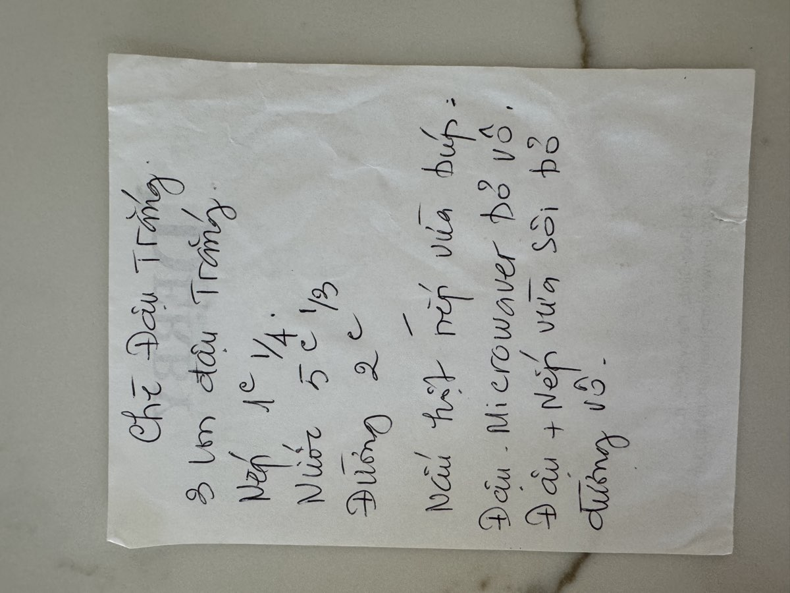

← Back to recipes

Chè Đậu Trắng
White Bean Sweet Soup
From Mẹ — Oanh
Nguyên liệu · Ingredients
- 3 cans white beans (đậu trắng), drained and rinsed
- 1¼ cups sticky rice (gạo nếp), rinsed
- 2 cups sugar, or to taste
- 5⅓ cups water
- Pinch of salt
- Coconut cream for drizzling (optional)
Phần lớn hơn · Larger Batch
- 3 cans white beans
- 2 cups sticky rice
- 4 cups sugar
- 7 cups water
Cách làm · Instructions
- Rinse the sticky rice several times until the water runs clear. Soak in water for at least 1 hour if you have time — this helps it cook softer and faster.
- In a large pot, bring the water to a boil. Add the drained sticky rice. Reduce heat to medium-low and cook for 20–25 minutes, stirring occasionally, until the rice is completely soft and the mixture turns creamy.
- Drain and rinse the canned white beans. Add them to the pot with the cooked sticky rice. Stir gently to combine — be careful not to mash the beans too much. Mẹ liked the beans to stay whole so each spoonful had that nice soft bite.
- Add sugar and a pinch of salt. Stir until the sugar is fully dissolved. Taste and adjust sweetness — Mẹ always said "thêm đường từ từ" (add sugar slowly), you can always add more but you can't take it back.
- Simmer everything together for another 5–10 minutes so the flavors meld. The chè should be thick but still pourable — add a little more water if it gets too thick.
- Serve warm in small bowls, drizzled with coconut cream if you like. This chè is also lovely chilled on hot days.
Công thức gốc · Original handwritten recipe

❦
A recipe from Mẹ's kitchen